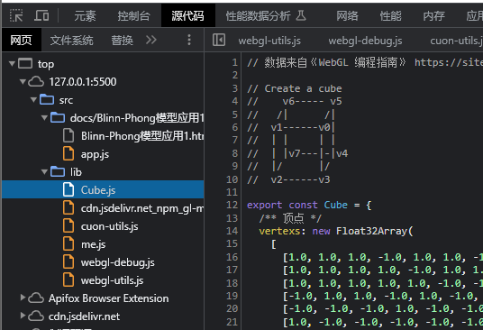

Blinn-Phong模型应用1
本示例演示了 Blinn-Phong 模型的实现。示例可交互，获取焦点后可以使用键盘鼠标交互，键位为 WASDTB 移动和鼠标改变视角。
这个示例是基于《绘制正方体3》修改的的。
这个示例中我们使用了环境光照和平行光源，实现了漫反射平行光源的效果。
首先重要的一点，我们需要准备各个顶点对应的法向量，我们让每个顶点的法向量和它所在面的法向量一致即可。
这些数据我直接拷贝的《WebGL 编程指南》，可以在这个网址 https://rodger.global-linguist.com/webgl/ch08/LightedCube.html 拿到所有数据，或者翻看本页面的源码。

当然实际上顶点的法向量我们完全可以根据三角形的三个顶点算出来，不过这需要三角形的数据很工整，这一般都是在模型开发的时候就直接设置三角形的那个面是正面，然后生成模型数据的时候就一起生成顶点法向量的数据了。
然后就常规的把法向量的数据写入缓冲区里面和顶点一一对应，主要操作在于着色器中。顶点着色器如下：
代码中我们向着色器写入了顶点法向量的数据还有法向量的变换矩阵，然后使用 varying 变量传递给片元着色器，传递之前对法向量进行了相应的变换。
接着是片元着色器：
我们的计算公式和《颜色、光源和漫反射》一节推导的完全一样，只是计算的过程中需要对相关的向量进行归一化。可以看到我们并没有处理镜面反射得来的高光，这是因为我们的图形本来就是正方体，而光源使用的是平行光，高光得出的效果会很奇怪，一旦高光就会高光整个面。下个应用渲染点光源的时候可以使用镜面反射。